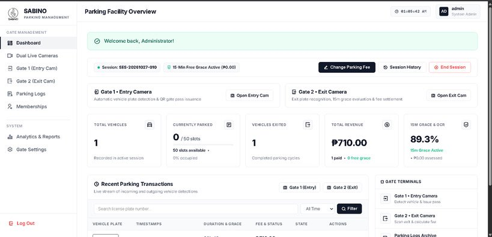

Academic Project / System Development
AutoTrace
A Computer Vision and OCR-Driven Approach to License Plate Number Extraction with Relational Database Integration
Project Overview: An intelligent system focused on license plate number extraction using Computer Vision and Optical Character Recognition (OCR), integrated with a relational database for structured data storage and management.
Key Features & Functionality:
- ✓ Automated vehicle license plate detection and OCR extraction at gate camera terminals.
- ✓ Dual live camera monitoring for incoming (Gate 1 Entry) and outgoing (Gate 2 Exit) vehicles.
- ✓ Relational database integration for logging vehicle plates, timestamps, and parking sessions.
- ✓ Real-time parking overview dashboard tracking facility occupancy, grace evaluation, and revenue.
Key Technologies:
Computer Vision
Optical Character Recognition (OCR)
Relational Database Integration
License Plate Recognition